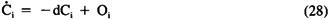
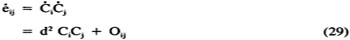

|
Fuzzy Expert Systems
by Abraham Kandel
CRC Press, CRC Press LLC
ISBN: 084934297x Pub Date: 11/01/91
|
Concomitant variation, not activation, drives learning (inductive causal inference) in Equation 27. This produces an intuitive sign law. For although Ci and Cj cannot be negative, their derivatives can be negative and are negative if, and only if, Ci and Cj move in opposite directions. If they move in the same directions — they both increase or both decrease — then the derivative product is positive. In this sense the differential Hebbian more aptly captures the correlation learning that formed the basis for Hebbian learning. It is an open, but intriguing, question whether Equation 27 has any validity in vivo. Yet there is some reason to suspect it might, which follows from the natural relation between Equations 26 and 27. Any dynamic node equation for Ci contains a passive decay term -d Ci, where d is a positive decay constant (or function), and other terms, which we lump in the parameter 0i:

Therefore, substituting Equation 28 in Equation 27 for and gives:

where again Oij is a catchall symbol representing all other terms. Thus, Equation 29 shows that differential Hebbian learning implies Hebbian learning. It further shows how this subsumption comes about — by interaction of passive-decay, or resting-potential, phenomena. When Equation 27 is used to autonomously grow fuzzy logic (causal) paths on a FCM from raw data, it allows one, in some sense, to grow his own expert system.
In summary, the FCM FAM framework provides an alternative to traditional AI expert-system knowledge representation and inferencing. FCMs are comparatively easy to gather from experts, many experts, allowing rich and uncertain causal problem domains to be systematically represented and combined. Unlike expert-system logic trees, FCM FAMs do not directly allow a logical audit trail to be exhibited by which the system explains itself. Also the state-transition nonlinearities do not permit backward chaining (although more complicated knowledge networks can incorporate goal information in update thresholds and feedback loops). Instead emphasis is on decoding and accurate prediction. FCM node size does not, in principle, affect FCM convergence speed. Unambiguous predictions are speedily made given any input state or sustained input. These predictions can be compared with the available evidence; discrepancies can suggest changes in causal connections. Indeed, in sociopolitical problem domains, different FCMs can represent conflicting ideologically motivated world views. An evidential procedure can then adjudicate FCM modifications and, perhaps, world views. In other words, instantiated FCM FAMs are testable causal theories.
Acknowledgments
This research was supported by the Air Force Office of Scientific Research (AFOSR F49620-86-C-0070) and the Advanced Research Projects Agency of the Department of Defense under ARPA Order No. 5794.
References
- 1. Abu-Mostafa, Y. S. and St. Jacques, J., Information capacity of the Hopfield model, IEEE Trans. Inf. Theor., IT 31(4), 461, July 1985.
- 2. Anderson, J. A., Cognitive and psychological computation with neural models, IEEE Trans. Syst. Man, Cybern., SMC 13(5), September/October 1983.
- 3. Anderson, J. A. and Mozer, M., Categorization and selective neurons, in Parallel Models of Associative Memory, Hinton, G. and Anderson, J. A., Eds., Erlbaum, Hillsdale, NJ, 1981.
- 4. Anderson, J. A., Silverstein, J. W., Ritz, S. A., and Jones, R. S., Distinctive features, categorical perception, and probability learning: some applications of a neural model, Psych. Rev., 84, 413, 1977.
- 5. Bandler, W. and Kohout, L., Fuzzy power sets and fuzzy implication operators, Fuzzy Sets Syst., 4, 13, 1980.
- 6. Carpenter, G. A. and Grossberg, S., A massively parallel architecture for self-organizing neural pattern recognition machine, in Comput. Vision, Graphics, Image Process., 1986.
- 7. Carpenter, G. A. and Grossberg, S., Associative learning, adaptive pattern recognition, and cooperative-competitive decision making by neural networks, in Proc. SPIE: Hybrid and Optical Systems, Szu, H., Ed., 1986.
- 8. Cheeseman, P., In defense of probability, Proc. of the IJCAI-85, August 1985, 1002.
- 9. Cohen, M. A. and Grossberg, S., Absolute stability of global pattern formation and parallel memory storage by competitive neural networks, IEEE Trans. Syst. Man, Cybern., SMC 13, 815, September/October 1983.
- 10. Cohen, M. A. and Grossberg, S., Masking fields: a massively parallel neural architecture for learning, recognizing, and predicting multiple groupings of patterned data, Appl. Optics, 1986.
- 11. Cox, R. T., Probability, frequency and reasonable expectation, Am. J. Phys., 14(1), 1, January/February 1946.
- 12. Dubois, D. and Prade, H., Fuzzy cardinality and the modeling of imprecise quantification, Fuzzy Sets Syst., 16(3), 199, August 1985.
- 13. De Luca, A. and Termini, S., A definition of a nonprobabilistic entropy in the setting of fuzzy sets theory, Inf. Control, 20, 301, 1972.
- 14. Gaines, B. R., Foundations of fuzzy reasoning, Int. J. of Man-Mach. Stud., 8, 623, 1976.
- 15. Grossberg, S., Contour enhancement, short term memory, and constancies in reverberating neural networks, Stud. Appl. Math., 52, 217, 1973.
- 16. Grossberg, S., Adaptive pattern classification and universal recoding, I. parallel development and coding of neural feature detectors, Biol. Cybern., 23, 121, 1976.
- 17. Grossberg, S., A theory of human memory: self-organization and performance of sensory-motor codes, maps, and plans, in Progress in Theoretical Biology, Vol. 5, Rosen, R. and Snell, F., Eds., Academic Press, New York, 1978.
- 18. Grossberg, S., How does a brain build a cognitive code? Psych. Rev., 1, 1, 1980.
- 19. Grossberg, S., Adaptive resonance in development, perception, and cognition, in Mathematical Psychology and Psychopshysiology, Grossberg, S., Ed., American Math Society, Providence, RI, 1981.
- 20. Grossberg, S., Studies of Mind and Brain: Neural Principles of Learning, Perception, Development, Cognition, and Motor Control, Reidel Press, Boston, 1982.
- 21. Grossberg, S., The Adaptive Brain, I & II, North-Holland, Amsterdam, 1986.
- 22. Grossberg, S. and Kuperstein, M., Neural Dynamics of Adaptive Sensory-Motor Control: Ballistic Eye Movements, North-Holland, Amsterdam, 1986.
- 23. Hebb, D., The Organization of Behavior, John Wiley & Sons, New York, 1949.
- 24. Hecht-Nielsen, R., Performance limits of optical, electro-optical, and electronic artificial neural system processors, Proc. SPIE: Hybrid and Optical Systems, Szu, H., Ed., 1986.
- 25. Hopfield, J. J., Neural networks and physical systems with emergent collective computational abilities, Proc. Natl. Acad. Sci. U.S.A., 79, 2554, 1982.
- 26. Hopfield, J. J., Neurons with graded response have collective computational properties like those of two-state neurons, Proc. Natl. Acad. Sci. U.S.A., 81, 3088, 1984.
- 27. Jaynes, E. T., E. T. Jaynes: Papers on Probability, Statistics, and Statistical Physics, Rosenkrantz, R. D., Ed., Reidel Press, Boston, 1983.
- 28. Jaynes, E. T., Where do we stand on maximum entropy?, in The Maximum Entropy Formalism, Levine, R. and Tribus, A., Eds., MIT Press, Cambridge, MA, 1979.
- 29. Kandel, A., Fuzzy Mathematical Techniques with Applications, Addison-Wesley, Reading, MA, 1986.
- 30. Kishi, F. H., On line computer control techniques, in Advances in Control Systems: Theory and Applications, Vol. 1, Leondes, C. T., Ed., Academic Press, New York, 1964.
- 31. Klement, E. P., Operations on fuzzy sets and fuzzy numbers related to triangular norms, in Proc. 11th Int. Symp. Multi-Valued Logic, 218, 1981.
- 32. Kohonen, T., Content-Addressable Memories, Springer-Verlag, New York, 1980.
- 33. Kohonen, T., Self-Organization and Associative Memory, Springer-Verlag, New York, 1984.
- 34. Kosko, B., Fuzzy cognitive maps, Int. J. Man-Mach. Stud., 24, 65, January 1986.
- 35. Kosko, B., Differential Hebbian Learning, in Am. Inst. Physics Conf. Proc.: Neural Networks for Computing, Denker, J. S., Ed., Snowbird, Utah, April 1986, 277.
- 36. Kosko, B., Counting with fuzzy sets, IEEE Trans. Pattern Anal. Mach. Intell., PAMI 8(4), 556, July 1986.
- 37. Kosko, B., Bidirectional Associative Memories, September 1986.
- 38. Kosko, B., Fuzzy knowledge combination, Int. J. Intell. Syst., 1, 1986.
- 39. Kosko, B., Fuzzy entropy and conditioning, Inf. Sci., 1986.
- 40. Kosko, B., Hidden patterns in combined knowledge networks, 1986.
- 41. Kosko, B., Vision as causal activation and association, in Proc. SPIE: Intell. Robots Computer Vision, Vol. 579, Casasent, D., Ed., 104, September 1985.
- 42. McCulloch, W. S. and Pitts, W., A logical calculus of the ideas immanent in nervous activity, Bull. Math. Biophys., 5, 115, 1943.
- 43. Pearl, J., On evidential reasoning in a hierarchy of hypotheses, Artif. Intell., 28, 9, 1986.
- 44. Pearl, J., Fusion, Propagation, and Structuring in Bayesian Networks, Artif. Intell., 29, 241, 1986.
- 45. Prade, H., A computational approach to approximate and plausible reasoning with applications to expert systems, IEEE Trans. Pattern Anal. Mach. Intell., 7(3), 260, 1985.
- 46. Rumelhart, D. E. and McClelland, E., Eds., Parallel Distributed Processing, Vols. 1 and 2, MIT Press, Cambridge, MA, 1986.
- 47. Shenoy, P. and Shafer, G., Propagating belief functions with local computations, IEEE Expert, 1(3), 43, 1986.
- 48. Togai, M. and Watanabe, H., A VLSI Implementation of Fuzzy Inference Engine: Toward an Expert System on a Chip, in Proc. 2nd IEEE CAIA, Miami Beach, FL, December 1985.
- 49. Togai, M. and Watanabe, H., Expert system on a chip: an engine for realtime approximate reasoning, IEEE Expert, 1(3), 55, 1986.
- 50. Van Campenhout, J. M. and Cover, T. M., Maximum entropy and conditional probability, IEEE Trans. Inf. Theory, IT-27(4), July 1981.
- 51. Zadeh, L. A., Fuzzy sets as a basis for a theory of possibility, Fuzzy Sets Syst., 1, 3, 1978.
- 52. Zadeh, L. A., A computational approach to fuzzy quantifiers in natural languages, Comput. Math. Appl., 9(1), 149, 1983.
- 53. Zadeh, L. A., The role of fuzzy logic in the management of uncertainty in expert systems, Fuzzy Sets Syst., 11, 199, 1983.
- 54. Zadeh, L. A., Syllogistic reasoning in fuzzy logic and its application to usuality and reasoning with dispositions, IEEE Trans. Syst. Man, Cybern., SMC 15(6), 754, November/December 1985.
- 55. Togai, M., personal communication.